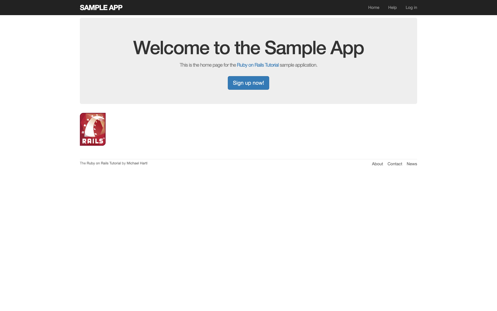
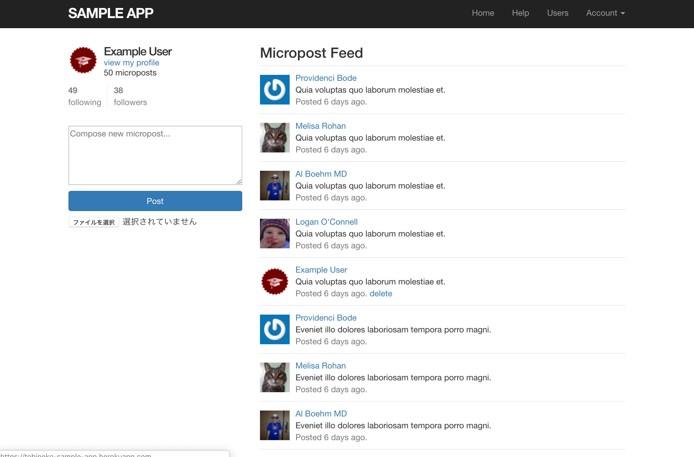
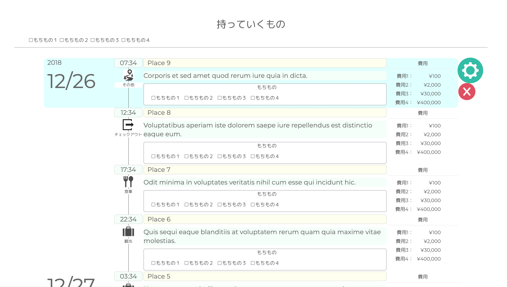
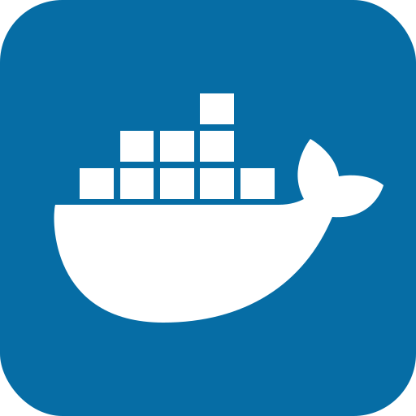
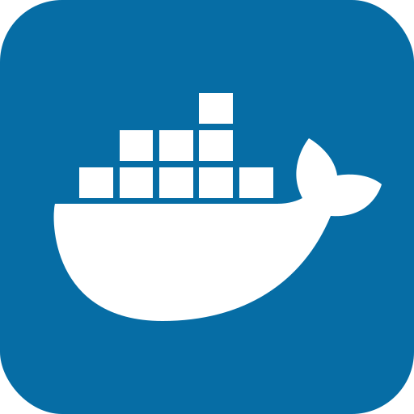

WORKS
職務経歴書はこちらを御覧ください。

Sample Application
使用言語
Ruby, Ruby on Rails, HTML, CSS, Jquery
開発環境
Atom, Vagrant, Git, Heroku
開発期間
1ヶ月
内容
「Ruby on Rails チュートリアル」を読み進めて作成した作品です。
Twitterのようなマイクロソフトをユーザ毎に投稿・閲覧できるWebアプリケーションです。 下記URLからサービスを確認できます。
（Herokuの起動まで数秒かかります）
URL:https://tobineko-sample-app.herokuapp.com/ テスト用ログインメールアドレス：testuser@test.mail
パスワード：foobar
Twitterのようなマイクロソフトをユーザ毎に投稿・閲覧できるWebアプリケーションです。 下記URLからサービスを確認できます。
（Herokuの起動まで数秒かかります）
URL:https://tobineko-sample-app.herokuapp.com/ テスト用ログインメールアドレス：testuser@test.mail
パスワード：foobar
Trapla
使用言語
Ruby, Ruby on Rails, HTML, CSS, Javascript, Jquery
開発環境
Atom, Git, Git flow, Docker, CircleCI, AWS
開発期間
２ヶ月
内容
旅行計画を作成するWebアプリケーションです。
作成した旅行計画は他のユーザに公開できます。
試してみたい機能などあったときは予告なしにアップデート入れたりしているので
つながらない瞬間があるかもしれないです。
以下URLからサービス確認できます。
http://13.228.52.57
テスト用ログインメールアドレス：testuser@test.mail
パスワード：foobar
試してみたい機能などあったときは予告なしにアップデート入れたりしているので
つながらない瞬間があるかもしれないです。
以下URLからサービス確認できます。
http://13.228.52.57
テスト用ログインメールアドレス：testuser@test.mail
パスワード：foobar


 
